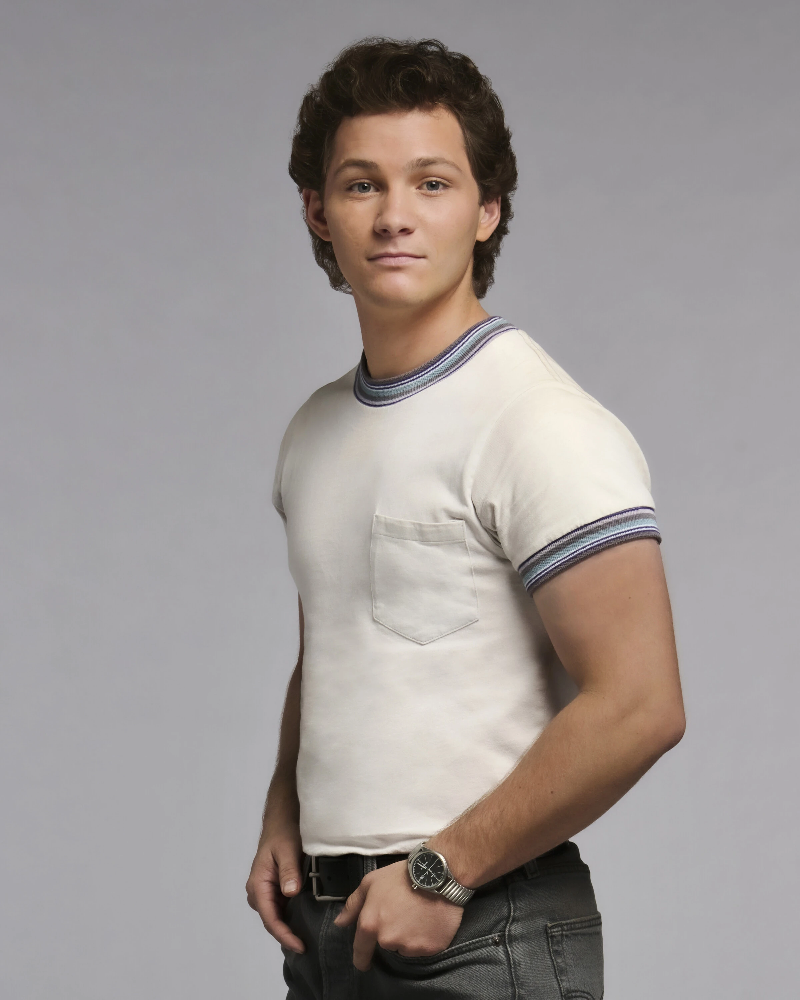

George Cooper Jr
George Jr. é um jovem vendedor e carismático, que passou sua juventude em Medford, Texas, buscando seu próprio caminho fora dos estudos acadêmicos.

Frases de Georgie:
"Eu não sou bom com livros, mas eu sou muito bom com dinheiro."
"Se você souber como vender, você nunca vai passar fome."
"Pneus. Todo mundo precisa de pneus. É o negócio perfeito."
Características de George Jr
- Faro para Negócios e Empreendedorismo
- Talento Natural para Mecânica (Pneus)
- Grande Carisma e Lábia
- Independência Financeira Precoce
- Inteligência Prática e Adaptabilidade
Acesse este link para ver os melhores momentos do seriado
Para mais informações, consulte a página da série na wikipedia
Site desenvolvido pelo aluno do 2°TINF - IFTM Campus Patrocínio
Voltar